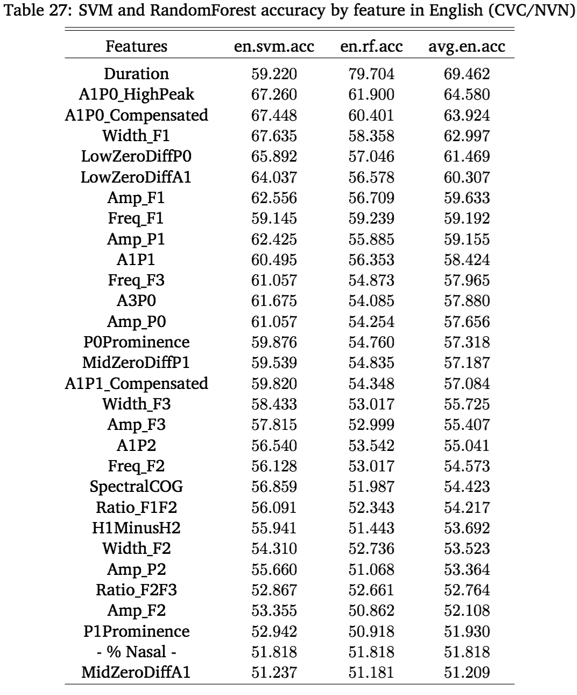
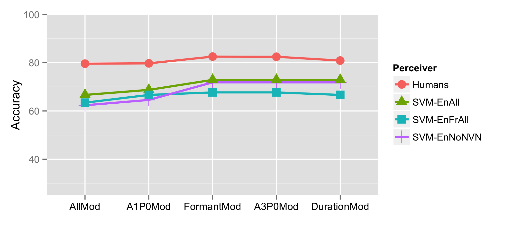

My Advisor, Rebecca
My Committee
Luciana Marques, Georgia Zellou, and Story Kiser
The rest of the CU Linguistic Community
My family
Jessica
Vowels
| # On the Acoustical and Perceptual Features of Vowel Nasality |
| ### Will Styler |

Opening the Velopharyngeal Port during vowel production to allow nasal airflow
|
‘Pats’ [pæts] |
‘Pants’ [pæ̃nts] |
|---|
|
‘seed’ [su] |
‘braid’ [sũ] |
|---|
Listeners clearly can make judgements about nasality in individual vowels*
(c.f. Lahiri and Marslen-Wilson 1991, Beddor and Krakow 1999, Beddor 2013, Kingston and Macmillin 1995, Macmillin et al 1999, the existence of French, Hindi, Lakota…)
… but Linguists don’t understand what features of the signal allow them to do so!

Collect Data and measure possible features
Experiment 1 - What features are statistically linked to nasality?
Experiment 2 - What features are useful for identifying nasal vowels?
Experiment 3 - What features are humans using to perceive nasality?
Experiment 4 - Does machine learning show a similar perceptual pattern?
I recorded 12 English and 8 French speakers making words with oral and nasal(ized) vowels
For English, I recorded CVC/CVN/NVC/NVN minimal pairs
For French, I recorded nasal/oral vowel minimal pairs
4,778 vowels total
Find features that could indicate nasality, and measure them!
Toss the measurements into R for analysis


| ### Vowel Formant Frequency/Bandwidth |
 |

“If a feature doesn’t meaningfully differ between oral and nasal vowels, humans won’t use it.”
Let’s test which features are different in oral and nasal vowels!
This will show the statistical link between the features and nasality
Control for the effect of repetition, timepoint, speaker, and word
Only 19/29 features showed a significant link with nasality in both languages
Of those, only some showed large oral-to-nasal changes
Formant Bandwidth was really strong in both languages
A1-P0 performed well in both languages
P0Prominence worked well in both languages
Duration showed major changes in both languages
Spectral Tilt showed strong changes in French, less so in English
We now know which features are linked with nasality across the entire dataset
… and which ones show the largest oral-to-nasal changes
These tests show overall trends across several thousand words
How do we know if these features help us spot nasality in any given vowel?

Speech perception is just classifying sounds based on acoustical features
Computers can do that too!
Give the feature information to a classifier and ask for oral vs. nasal judgements
“Find the patterns in this training data, then use them to predict which group this new datapoint belongs to!”
“Based on the words around it, what verb sense is being used?”
“Is this handwritten symbol a”1”? “2”? “3”?
“Does this set of measurements indicate an oral vowel, or a nasal vowel?”
They live in my apartment!
They don’t have any context.
Their decisions are easier to quantify.
They’ll tell you how they made the decision they did.
RandomForests
Support Vector Machines
RandomForests are really transparent, SVMs are really accurate.
Are any features good enough on their own to allow nasal perception?
116 models, one per feature per algorithm per language
Each model outputs accuracy, which we can compare!
Duration is suspiciously useful
F1’s Bandwidth wins for English
Spectral Tilt wins for French
A1-P0 gets second place for both
None of the features are good enough on their own!
RandomForests can calculate which features were most useful for classification!
|
1. 2. 3. |
English F1’s Bandwidth A1-P0 Duration |
French Spectral Tilt A1-P0 F1’s Bandwidth |
|---|
So, we know which features are useful and important
SVMs with all features worked best (29 features)
Formant Width, Formant Frequency, Tilt, A1-P0, and Duration was the best subgroup (9 features)
We only lose 2-3% accuracy when we reduce our feature set by 68%!
Formant Bandwidth was the best feature for English, strong in French
Spectral Tilt was the most useful feature in French, less so in English
A1-P0 performed well in both languages
Formant Frequency was useful too!
Duration was really useful in both languages
So, we’ve got 5 features which allow high accuracy
English listeners can use vowel nasality to identify missing nasal consonants!
Let’s add or remove features from vowels to see what indicates “nasality”!
If adding or removing a feature changes perception, or makes them react more slowly, it’s important!
Simulate the oral-to-nasal change in A1-P0 (or vice versa)
Simulate the oral-to-nasal change in duration (or vice versa)
Simulate the oral-to-nasal change in spectral tilt (or vice versa)
Change the formant structure
Change F1 and F3 bandwidth to match the oral and nasal norms
Simulate the overall oral-to-nasal change in F1’s frequency at the same time
Modify all four features at once! (“Allmod”)
bad |
ban |
|---|
bomb |
bob |
|---|
(397 more times!)
Use the accuracy and reaction time data from this experiment.
If listeners call originally nasal vowels “oral” (or vice versa), we’ll call the response inaccurate.
Increased RT means we’ve made classification more difficult.
Check the data using Linear Mixed-Effects Regressions

Modifying formants (or all together) resulted in more confusion!
People called oral vowels “nasal” more often with modified formants
The pattern of the All-Modified stimuli was statistically similar.
 |
| * Modifying formants (or all together) resulted in slower reaction times! |
| * People were slower to call vowels “oral” or “nasal” with modified formants |
Perception was affected by modifying formant structure, or by modifying all features.
Only modifying formant frequency and bandwidth had an effect on perception!

Confusion wasn’t affected by modificaton!
 |
| * Modifying formants (or all features) resulted in slower reaction times! |
| * People were slower to call vowels “oral” or “nasal” with modified formants |
None of the experimental modifications affected confusion
Modifying formants (or all features) resulted in slower responses
Formant changes slowed listeners down, but didn’t change classification!
Only formant modification had a significant effect on perception
Formant modification caused listeners to respond more slowly
Formant modification made oral vowels sound “nasal”
F1’s bandwidth is probably the cue
It worked best in ML, had the best statistical link, and it makes sense acoustically
Hawkins and Stevens (1985) also points that direction
Formant modification wasn’t enough to make nasal vowels sound “oral”
(We’ll talk more about that asymmetry later!)
So, we can answer our primary research question!

So, the machine learning models predicted F1’s bandwidth as the most useful feature…

NoNVN - Trained on English without NVNs (like the stimuli)
EnAll - Trained on all the English data
EnFrAll - Trained on English and French


Humans and machines did show similar patterns
The Generic English model showed the most similarity
Perceptual testing with machine learning isn’t crazy
Humans still win.

Experiment 1 - What features are statistically linked to nasality?
Experiment 2 - What features are useful for identifying nasal vowels?
Experiment 3 - What features are humans using to perceive nasality?
Experiment 4 - Do computers show a similar perceptual pattern?
We know more about measuring nasality
There’s no “magic feature”, but A1-P0 isn’t bad
We should also try F1’s Bandwidth
We know which features just don’t work.
We know more about cross-linguistic differences in nasal acoustics
We can accurately classify nasality using acoustics alone
The best features are general, rather than nasality specific
SVM classification showed similarity to human perception!
Modifying formants was the only modification which affected perception
… but it’s probably not the only cue for vowel nasality
Listeners slow down, but they don’t reclassify when we change bandwidth
There was still something “nasal” about the vowels
This actually makes sense, because…
The oral differences between oral and nasal vowels are not arbitrary
We only made formant changes assocated with all vowels
If nasal vowels are orally different, we wouldn’t confuse listeners by removing “nasality”
Contrast enhancement using a secondary feature is common
Nasal vowel systems are often very different than the oral vowel systems
Nasal systems often change independently of oral systems diachronically
So, nasality is part of the difference, but it’s not the only difference!
The English results used college-aged speakers and listeners
We only tested two vowels here, and we’ve got plenty more.
French Perception experiments need to be done!
There are still lots of languages out there in the world.
Our current measurements of nasality aren’t bad
Machines can accurately classify nasality
Formant bandwidth is the best nasality cue we’ve got
… but other aspects of the vowel articulation are important too!
Most importantly…
Carignan, C. (2014). An acoustic and articulatory examination of the oral in nasal: The oral articulations of french nasal vowels are not arbitrary. Journal of Phonetics, 46(0):23–33.
Carignan, C., Shosted, R., Shih, C., and Rong, P. (2011). Compensatory articulation in american english nasalized vowels. Journal of Phonetics, 39(4):668 – 682.
Carignan, C., Shosted, R. K., Fu, M., Liang, Z.-P., and Sutton, B. P. (2015). A real-time mri investigation of the role of lingual and pharyngeal articulation in the production of the nasal vowel system of french. Journal of Phonetics, 50(0):34 – 51.
Chen, M. Y. (1997). Acoustic correlates of english and french nasalized vowels. The Journal of the Acoustical Society of America, 102(4):2350–2370.
Hawkins, S. and Stevens, K. N. (1985b). Acoustic and perceptual correlates of the non-nasal–nasal distinction for vowels. The Journal of the Acoustical Society of America, 77(4):1560–1575.
Shosted, R., Carignan, C., and Rong, P. (2012). Managing the distinctiveness of phonemic nasal vowels: Articulatory evidence from hindi. The Journal of the Acoustical Society of America, 131(1):455–465.
G. Zellou. Similarity and Enhancement: Nasality from Moroccan Arabic Pharyngeals and Nasals. PhD thesis, University of Colorado at Boulder, 2012.



